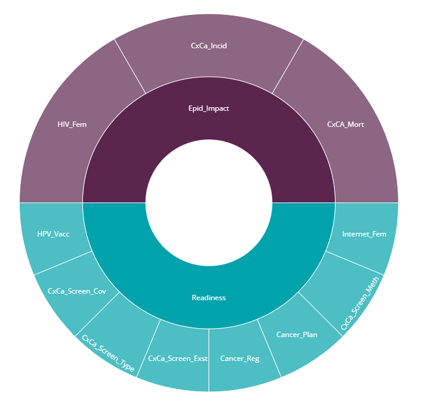
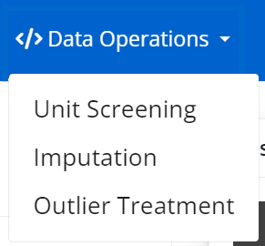

2 Overview
In this chapter we walk through steps to build and analyse a composite indicator. More detailed documentation for each step, including explanation about the methodology, can be found in the following chapters.
In general, users are expected to prepare their data and indicator framework before using the app. Once the data is successfully loaded into the app, the user proceeds through the tabs roughly from left to right.
2.1 Before you start
The {composer} app deals with the numerical data-processing steps in composite indicator construction. Before arriving at this point, it is necessary to have a set of indicators which follow a conceptual framework.
The conceptual framework is a map of the concept you want to measure. Typically, the overall concept is broken down into sub-concepts (“dimensions”), which themselves may be broken down into smaller chunks. This results in a hierarchical map of the concept, with indicators at the bottom level which aim to capture each chunk of the concept. The framework can have any number of levels, although simplicity should be preferred where possible.
Add example here?
Typically the conceptual framework is constructed by consulting experts, and performing a literature review. If you yourself are an expert in the topic, you may be able to map the concept sufficiently well on your own. A more detailed explanation of building a conceptual framework can be found here.
After the conceptual framework, indicators are selected. You should aim to have enough indicators to sufficiently capture the concept to be measured, but avoid redundancies and overlaps as much as possible. Evaluate each indicator critically based on its relevance, value added, reliability, data availability and other criteria. Don’t automatically include indicators simply because data is available. Some more guidance on indicator selection can be found here.
For each indicator, collect as much available data as possible. If possible, use a reproducible workflow to clean and process each indicator, so that there is a clear record of how the indicator arrived in its present state. This can be invaluable when later on stakeholders may ask questions about the methodology behind indicators, and also helps to spot errors. If your data is measuring attributes of countries, use ISO alpha-3 country codes - this allows the app to translate your data onto maps, and is anyway good practice for merging data.
General guidance on composite indicators can be found at the European Commission’s Competence Centre for Composite Indicators.
2.2 Data input
The next step is to enter your data into the app. To do this, you have to compose your data set and conceptual framework into a single spreadsheet containing the formatted input tables required by the {composer} app. This step needs to be done carefully and is explained in more detail in Chapter 4.
The app will attempt to spot any errors in your input data and give helpful error messages where possible. However, it is important to carefully read the instructions on input data formatting.
Once the data is correctly formatted, upload your data to the app. If successful, the app will return a summary of the input data, as well as visual plot of the conceptual framework.

The framework plot should reflect the expected index structure.
2.3 Data operations
The data operations tab contains a group of four possible operations to apply to your data set. All of these options are optional, except normalisation which is required.

The screening tab allows you to remove units (e.g. countries) based on a data availability threshold. This can be useful to exclude any units with very low data availability. Screening can also be performed based on the proportion of zeroes. This is explained more in Chapter 5.
The imputation tab provides several simple approaches to estimating missing data points. Note that imputation should be used carefully and only for small amounts of missing data. If an indicator or unit has a high proportion of missing data points, it may be better to exclude it. This is explained in Chapter 6.
The outlier treatment tab uses a built-in algorithm to treat outliers. The reasons for doing this, and the methodology behind it, are explained in Chapter 7.
Finally, the normalisation tab gives several options for normalising indicators, i.e. bringing them onto a common scale ready for aggregation. This step is mandatory to calculate index scores, because aggregating indicators on very different scales hardly ever makes any sense. Normalisation is explained in Chapter 8.
Each operation is applied in order, so e.g. imputation will be applied the data set produced by the screening tab, if that was run. Outlier treatment will be applied to the imputed data set, if imputation was run. Although data operations are optional, it is not possible to change the order of data operations (e.g. you cannot do outlier treatment before imputation).
It is up to you which operations you apply. Usually it is a good idea to screen out any units with low data, and treat any major outliers. However these choices are subjective.
2.4 Compose
The compose tab allows you to aggregate your normalised indicator data, in order to calculate all scores up to the index level. It aggregates using one of the selected methods, using the weights specified in your input data.
The immediate output here is a results table. The results are used in the rest of the app, and can be visualised and explored in the following tabs. Later, you also have the option to adjust the index, and you can anyway go back and alter the methodology in the previous tabs.
2.5 Explore
The explore group of tabs gives various options for visualising and analysing the results (the index scores) as well as the indicator data itself.
First, the map tab allows the index, or any indicator, to be displayed as choropleth map. This will only work if your data is at the country level, AND the indicator codes correspond to ISO alpha-3 codes, as mentioned previously.
The bar tab is similar to the map tab, but shows index or indicator scores ordered in a bar chart, and can be used for non-country data.
The bubble tab gives a sophisticated interface for plotting any indicator/index against any other, and allows points to be sized and coloured according to other variables and groups.
The descriptive stats tab allows the statistics of each indicator to be explored in detail via distribution plots, and also summarises potential issues with individual indicators.
Finally, the correlations tab generates correlation heatmaps of any group of indicators against any other. This can be useful for seeing at a glance how indicators are related, and can also help to spot errors in directionality.
2.6 Unit profiles
The unit profiles tab allows you to zoom in on the scores of any selected unit. The aim is to go back to the raw data and show why each unit has a high or low score, in terms of its underlying indicators. Top and bottom-ranking indicators are listed, and unit reports can be dowloaded as HTML files.
2.7 Adjust
The last tab group is for adjusting the index and exploring its robustness.
The first tab, called reweighting, allows to explore the effects of changing the weights at any level, and compare the results with the weights currently used in the “compose” tab. You can save weight sets and then use them as the “official” set for the results by returning to the compose tab and using the saved weight set.
The removing elements tab explores the impact of removing indicators, or whole indicator groups, from the framework. It allows to see which indicators may perhaps have little effect on the results, therefore pointing to ways to reduce the indicator framework size if needed.
Finally, the sensitivity analysis tab allows you to formally explore the impacts of assumptions made in the construction of the index, and estimate the uncertainty in the rankings. This is done by exploring alternative plausible ways to construct the index.
2.8 Export and sessions
At any point in the app, you can save your session by clicking the “save session” button NOTE: to complete this when we finalise how it should work.
Similarly, the results can be exported to Excel at any point (after successful data upload) by clicking the “Export to Excel” button.